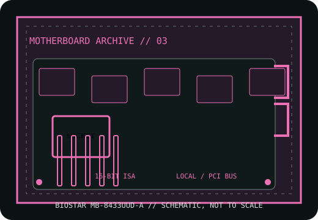

[ HISTORICAL SYSTEM BOARD // IDENTIFIED MODEL ]
BIOSTAR MB-8433UUD-A
Socket 3 PCI 486 motherboard, early-to-mid 1990s. This record distinguishes the exact model from related variants and requires revision-matched documentation for service.

IDENTIFY THE PCB: Record model suffix, board revision, chipset markings, BIOS label and date codes before applying any family-level compatibility information.
Model specifications
| Exact model | BIOSTAR MB-8433UUD-A |
|---|---|
| Generation / chipset | Socket 3 PCI 486 motherboard, early-to-mid 1990s; UMC 8881/8886 PCI/ISA chipset family, reported for MB-8433UUD boards; verify IC markings and manual edition. |
| CPU socket / processor | Socket 3 486SX/DX/DX2/DX4-compatible family where the PCB revision and voltage/clock jumpers support the specific processor. |
| RAM technology / capacity | 72-pin SIMM FPM DRAM, up to 128 MB reported; supported SIMM organization, parity and bank population are manual-specific. |
| Form factor | Baby AT. |
| Bus, slots & I/O | PCI and 16-bit ISA expansion; IDE, floppy, serial, parallel, keyboard and optional PS/2 mouse I/O are documented by revision. |
| Jumpers / BIOS compatibility | AMI/Award BIOS editions are reported across revisions. Match the BIOS label and jumper chart to the board; voltage/multiplier settings are not interchangeable across 8433 variants. |
Jumper, BIOS & compatibility notes
MB-8433UUD-A is not interchangeable with MB-8433UUD revisions or similarly named Biostar models. Confirm PCB marking, chipset, socket voltage and ROM checksum before using an upgrade CPU.
AMI/Award BIOS editions are reported across revisions. Match the BIOS label and jumper chart to the board; voltage/multiplier settings are not interchangeable across 8433 variants. Matching socket or connector geometry alone does not establish CPU, memory or firmware compatibility.
Safety & preservation
Use ESD precautions and record SIMM/slot population. Inspect battery leakage, barrel-battery damage, VRM and capacitors. Preserve the original BIOS chip and labels; verify AT power connector orientation before test power.
Preserve provenance, original labels, jumpers and test conditions. Photograph the board before repair; avoid aggressive cleaning or desoldering until corrosion and component risks are documented.
Manufacturer and archive manuals
- BIOSTAR MB-8433UUD manual scan — The Retro WebArchived board manual scan; the revision named in the scan may differ from an A-suffix board.
- BIOSTAR MB-8433UUD manual — ManualsLibAdditional archived manual copy; treat it as corroboration, not proof that every UUD revision is identical.
Archived copies may cover another board revision. Compare manual diagrams and revision identifiers with the physical PCB; do not flash firmware or set voltage jumpers from a related model's manual.